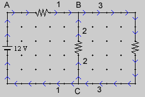

Figure 1
Figure 1 shows a junction in an electric circuit at which three branches are joined. Positive directions have been defined in the branches. They are indicated by arrows. A current has a positive value if its direction coincides with the positive direction in the branch where the current is. The branches in the diagram above are labeled 1 to 3, and the currents in the branches will be labeled I1 to I3, accordingly.
Kirchhoff's Junction Rule (Current Law) says that the sum of the currents entering a junction is equal to the sum of the currents leaving the junction.In the case of the situation in Figure 1, this amounts to
I1 + I2 = I3.
For the purpose of this rule, a current is considered to be entering (leaving) the junction if the direction assigned to the branch in which the current is points to (away from) the junction. In our example, currents 1 and 2 are entering the junction and current 3 is leaving it.
The real directions of the currents may be different from what this terminology suggests. E.g., current 1 may be directed to the left, i.e., away from the junction. We will still treat the current as if it were entering the junction, but will assign it a negative value because its direction is opposite to that defined as positive by the arrows in branch 1. The direction of the arrows is a matter of choice, not fact.
In writing down the junction equation, one assumes that all currents are in the positive directions. The resulting equation will be correct, no matter what the actual current directions are, as long as the currents are given the appropriate sign.
The physics underlying Kirchhoff's Junction Rule is the conservation of electric charge. We are assuming the circuit is operating in a steady state. Then electric charge cannot be building up at a junction. Because of charge conservation, the amount of charge entering the junction per unit time must then be equal to the amount of charge leaving the junction, in other words, the sum of the currents entering the junction must equal the sum of the currents leaving the junction.
Kirchhoff's Loop Rule (Voltage Law)

Figure 2
Figure 2 shows an electric circuit with three branches, labeled 1, 2, and 3. Resistors, resistances, and currents in these branches will be subscripted with the branch numbers.
Starting from point A, one can move in a closed loop via resistor R1, junction B, resistor R2, and junction C back via the battery to point A.
Kirchhoff's Loop Rule (Voltage Law) says that the sum of the potential differences encountered in going around a loop in a DC Circuit is equal to zero.If the currents in resistors R1 and R2 are denoted by I1 and I2, respectively, where the signs of the currents are chosen relative to the positive branch directions indicated by arrows in Figure 2, then Kirchhoff's Loop Rule amounts to the following equation for the loop described above:
-R1I1 + R2I2 + 12 V = 0 .
The signs in this equation can be understood as follows. Pretend the currents are in the directions indicated by the arrows. In going from A to B one goes in the direction of current I1. Currents go from high to low potential. (We are assuming the conventional current direction.) The magnitude of the potential difference across resistor R1 is equal to R1I1. Since the potential is decreasing in the direction of the current, the potential difference in going from A to B is -R1I1. In branch 2 we are moving against the current. Therefore the potential changee in going across R2 is +R2I2 because the potential is increasing in going against the current. Finally, in going from C to A we are crossing the battery from the negative to the positive pole and therefore are gaining a potential difference of +12 V.
Kirchhoff's Loop Rule holds for any loop that one can find in a circuit. Let's apply it to another loop in the present circuit, the one that goes from A to junction B, then to junction C via the 6-V battery on the right, then back to A. If I3 denotes the current in resistor R3, Kirchhoff's Loop Rule gives
-R1I1 + 6 V - R3I3 + 12 V = 0 .
Kirchhoff's Loop Rule is a consequence of energy conservation, in the following sense. Electric potential is defined as the electric potential energy of a test charge q, divided by q. Thus, Kirchhoff's Loop Rule is effectively saying that when a charge q moves around a loop in a circuit the changes in the potential energy of the charge add up to zero, which is equivalent to saying the potential energy of the charge is the same after completing the journey around the loop as at the start. This is analogous to the gravitational potential energy of a roller coaster car. It does not change overall from the starting point around the track back to the starting point.
Note that a charge loses electric potential energy as it moves through a resistor. The electric potential energy of the charge is converted in the resistor into thermal energy. The resistor becomes warmer. There must be a source of energy in the loop that does an equal amount of work on the charge in order to raise its potential energy back to the original level. In the circuit illustrated above, the energy source is a battery. The battery converts chemical energy stored within its chemicals into electric potential energy of the charges passing through it.